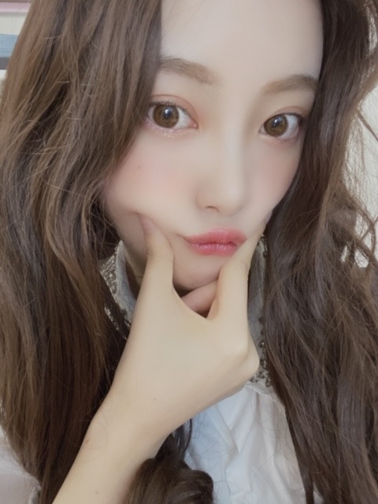
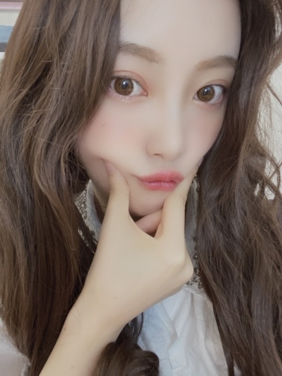

2020/0411Satぜんぶぜんぶ
こんにちはまぐり



前髪なしロングだとこんなかんじに
なるらしい☺︎
どうですか？
でも私の周り、ボブ派が多いんですよ

私もなんやかんやで気に入ってます笑
なので2020年は(多分)ボブでいますね
髪色抜けてきたし また暗くしなあかんなー
暗い髪色の方が落ち着きます ᕦ(ò_óˇ)ᕤ

みなさん、好きな海鮮なんですか？
私は、サザエ ウニ 大アサリ ...
たくさんあります
中学の時、離島に研修に行った時
魚が怖いのに学年1 たくさんの魚を釣ってしまった
変な思い出があります
運だけはあるみたい
キャッチアンドリリースしました
その時に作ったわかめのお味噌汁...
美味しかったなぁ
いつか海の近くにも住みたいです
潮干狩りにも挑戦してみたいです
あ、あと
" 猿に会う " 第二話がdTVにて配信されています☺︎
是非見てください！
素ではないです！
もちろんお芝居です！
怖がらんでね〜
でははは
こんにちはまぐり

前髪なしロングだとこんなかんじに
なるらしい☺︎
どうですか？
でも私の周り、ボブ派が多いんですよ
私もなんやかんやで気に入ってます笑
なので2020年は(多分)ボブでいますね
髪色抜けてきたし また暗くしなあかんなー
暗い髪色の方が落ち着きます ᕦ(ò_óˇ)ᕤ
みなさん、好きな海鮮なんですか？
私は、サザエ ウニ 大アサリ ...
たくさんあります
中学の時、離島に研修に行った時
魚が怖いのに学年1 たくさんの魚を釣ってしまった
変な思い出があります
運だけはあるみたい
キャッチアンドリリースしました
その時に作ったわかめのお味噌汁...
美味しかったなぁ
いつか海の近くにも住みたいです
潮干狩りにも挑戦してみたいです
あ、あと
" 猿に会う " 第二話がdTVにて配信されています☺︎
是非見てください！
素ではないです！
もちろんお芝居です！
怖がらんでね〜
でははは
2020/04/11 14:36
コメント(368)
ボブの方が好き！！ちな前髪分けてる方のが好き！
未央奈ちゃんブログ更新ありがとう
ロングもボブもどっちも好きだけど、前髪なしがめっちゃ
好き‼︎ （私がずっと前髪ないからなんだけどね笑）
体には気をつけて頑張ってください ずっと応援してるよ
いつも優しい未央奈ちゃんが大好きです
ロングもボブもどっちも好きだけど、前髪なしがめっちゃ
好き‼︎ （私がずっと前髪ないからなんだけどね笑）
体には気をつけて頑張ってください ずっと応援してるよ
いつも優しい未央奈ちゃんが大好きです
みおなちゃん、ブログ待ってたよ。
．ライスください！
．dtv２話、不気味少女。さすが役作りと言うか、ザンビで鍛えただけあって、素に演じてる。
．みおなちゃんは、４期生と本格的にドラマで共演するのってはじめて？
どう？４期生の役作りは？
たかお君なりにみて、前編も後編（みおなちゃんの出てる方）も
、見事に役に徹してるような感じがします。
．ちょっと前、乃木中で、葉月ちゃんをメークアップするみおなちゃんの回があったよね。インテックス大阪の個握でみおなちゃんと握手してもらった時に（だいぶ前？）なんて可愛いんやろ、ってつくづく思ったことがあるんよ。あの時は握手する手を怪我してたときでした。
あの頃から、メークアップ技術は相当高かったんやね。
．社会状況がこんなんやし、なかなかみおなちゃんと会えてないなーって思ってたんやけど、よく考えてみたら、名古屋のバスラ初日（生田さんの唯一出演）と、最終日（マイヤンのおそらく最後のバスラ、しかもサプライズプレゼントのしあわせの保護色の初披露）の時、二度までみおなちゃん会えてるやん。あの時もダントツで可愛いかった。
．頑張れ！みおな！頑張れ！二期生！頑張れ！乃木坂46！
．ライスください！
．dtv２話、不気味少女。さすが役作りと言うか、ザンビで鍛えただけあって、素に演じてる。
．みおなちゃんは、４期生と本格的にドラマで共演するのってはじめて？
どう？４期生の役作りは？
たかお君なりにみて、前編も後編（みおなちゃんの出てる方）も
、見事に役に徹してるような感じがします。
．ちょっと前、乃木中で、葉月ちゃんをメークアップするみおなちゃんの回があったよね。インテックス大阪の個握でみおなちゃんと握手してもらった時に（だいぶ前？）なんて可愛いんやろ、ってつくづく思ったことがあるんよ。あの時は握手する手を怪我してたときでした。
あの頃から、メークアップ技術は相当高かったんやね。
．社会状況がこんなんやし、なかなかみおなちゃんと会えてないなーって思ってたんやけど、よく考えてみたら、名古屋のバスラ初日（生田さんの唯一出演）と、最終日（マイヤンのおそらく最後のバスラ、しかもサプライズプレゼントのしあわせの保護色の初披露）の時、二度までみおなちゃん会えてるやん。あの時もダントツで可愛いかった。
．頑張れ！みおな！頑張れ！二期生！頑張れ！乃木坂46！
好きな海鮮はタコでございます
どの写真見ても可愛すぎて、幸せな気持ちになれます！
演技力絶対にあると思うので、映画・ドラマでももっともっと見たいです！応援してます！！
演技力絶対にあると思うので、映画・ドラマでももっともっと見たいです！応援してます！！
堀ちゃん
おでこ出しのロング素敵でーす！
K-POPアイドルみたい
おでこ出しのロング素敵でーす！
K-POPアイドルみたい
未央奈、こんばんは愛してる今日も可愛いね またね～ではでは❤️
ボブ派ですー！
未央奈ちゃん、こんにちわんわんわーん
ボブショートヘアーも前髪無しロングヘアーも
両方互角に似合ってて可愛い

海産物は鮭と鯵、鯖、秋刀魚、鮪、鰹が主に
好きだよ！でも、未央奈ちゃんの方が好きかな 中学生の時、魚が怖いのに
魚釣りが学年1になったのはとても素晴らしい
センスかと思うよ 乃木坂工事中の
番組企画で魚釣りをやって欲しいな
きっと未央奈ちゃんが乃木坂メンバーで1番
魚が釣れるかもよ(笑)
ではは
ボブショートヘアーも前髪無しロングヘアーも
両方互角に似合ってて可愛い
海産物は鮭と鯵、鯖、秋刀魚、鮪、鰹が主に
好きだよ！でも、未央奈ちゃんの方が好きかな
魚釣りが学年1になったのはとても素晴らしい
センスかと思うよ
番組企画で魚釣りをやって欲しいな
きっと未央奈ちゃんが乃木坂メンバーで1番
魚が釣れるかもよ(笑)
ではは
もちろん見るよ!
みおな、こんばんは！更新ありがとう。 近況報告ありがとうございます。 海鮮も好きです。 では、毎日みおなに良いこと沢山ありますように！ おやすみおな！！
この前のテレビ番組で「ライス！」って叫んだときの髪型とナチュラルなメイク、めちゃ可愛かったです！！！
前髪なしもかわいい
というか堀ちゃんならなんでも肯定です
牡丹海老の味噌汁おいしいよね
というか堀ちゃんならなんでも肯定です
牡丹海老の味噌汁おいしいよね
未央奈ブログ更新ありがとう！
前髪なしロング新鮮でいいかも！
でもやっぱり自分はショートが好きだ〜！
猿に会う1話見たよ！未央奈らしさが1話の時点で出てて良かったよ！2話も楽しみ！
これからも応援してるよ！
体調には本当に気をつけてね！
by未央奈推しのブラックコーヒー
前髪なしロング新鮮でいいかも！
でもやっぱり自分はショートが好きだ〜！
猿に会う1話見たよ！未央奈らしさが1話の時点で出てて良かったよ！2話も楽しみ！
これからも応援してるよ！
体調には本当に気をつけてね！
by未央奈推しのブラックコーヒー
未央奈さんワールドが、これはまたスピーディーに展開しておりますね(笑)
まるでパリジェンヌのような軽快さですね。
私の知り合いにパリジェンヌはいないんですけど(笑)
想像の翼を広げてみてそう思った次第です。
ロミオとジュリエットは名ゼリフの宝庫ですね、さすがシェイクスピア。
私がシェイクスピアを褒めてもしょうがないんですけどね。
それではまた
まるでパリジェンヌのような軽快さですね。
私の知り合いにパリジェンヌはいないんですけど(笑)
想像の翼を広げてみてそう思った次第です。
ロミオとジュリエットは名ゼリフの宝庫ですね、さすがシェイクスピア。
私がシェイクスピアを褒めてもしょうがないんですけどね。
それではまた
次はハマチ？はまち？？
大人っぽいですね～
海鮮か～
なんだかんだで
サーモン。
ウニ。
ホタテ。
かな？
きっと他にもあるとおもうけど（笑）
釣り名人だったんですね。
大人っぽいですね～
海鮮か～
なんだかんだで
サーモン。
ウニ。
ホタテ。
かな？
きっと他にもあるとおもうけど（笑）
釣り名人だったんですね。
日曜と言ったが、フライングへい(•ө•)。笑
・家での過ごし方は、dtvで洋画を観たり、You Tubeで、赤ん坊のかわいい動画やタロットの恋愛占い(←)を観たり、コロナ自粛前にスナックのママから『近年流行った曲をあんまり歌わないわわね』って言われたから、スピッツさんの"優しいあの子や、あいみょんさんの"マリーゴールド"の曲を覚えてるぜ。笑
バイオは4が好きだなープレステ2アーカイブスがダウンロード出来るなら、ps2の"零"ってホラーゲームは、ホラー好きの実妹的には面白かったらしいから是非(^^)
・俺は家にカラオケルームを作りたいかも。笑
・俺が来てない間に、更新が多いから分けます。笑
がんばみおなー
・家での過ごし方は、dtvで洋画を観たり、You Tubeで、赤ん坊のかわいい動画やタロットの恋愛占い(←)を観たり、コロナ自粛前にスナックのママから『近年流行った曲をあんまり歌わないわわね』って言われたから、スピッツさんの"優しいあの子や、あいみょんさんの"マリーゴールド"の曲を覚えてるぜ。笑
バイオは4が好きだなープレステ2アーカイブスがダウンロード出来るなら、ps2の"零"ってホラーゲームは、ホラー好きの実妹的には面白かったらしいから是非(^^)
・俺は家にカラオケルームを作りたいかも。笑
・俺が来てない間に、更新が多いから分けます。笑
がんばみおなー
白身魚が一番好きです。塩焼き、煮付け、刺身にしたりして料理してます。美味しい魚料理店があれば、教えてください。前髪あげると大人っぽく見えて素敵です。
乃木坂工事中でライスくださいの声も良かったなー。
最近うれしいことが、乃木坂工事中でいっぱい観れて、幸せ100%です。ありがとー。乃木坂工事中で、奮闘する未央奈ちゃん。元気をありがとー幸せです。今後も目立ってくれてありがとー。今後も乃木坂工事中観ます。
乃木坂工事中でライスくださいの声も良かったなー。
最近うれしいことが、乃木坂工事中でいっぱい観れて、幸せ100%です。ありがとー。乃木坂工事中で、奮闘する未央奈ちゃん。元気をありがとー幸せです。今後も目立ってくれてありがとー。今後も乃木坂工事中観ます。
めっちゃ似合ってるで
みおな こんばんは
ボブがいい
純ちゃんもボブだし
2期生皆んなで
ボブにしたらいいなぁ
なんて
ボブがいい
純ちゃんもボブだし
2期生皆んなで
ボブにしたらいいなぁ
なんて
未央奈ブログ更新ありがとう！
猿芝居ってことですかね？笑
嘘ですよ冗談です（上手いこと言えた ）
）
体調に気をつけて頑張ってね！
猿芝居ってことですかね？笑
嘘ですよ冗談です（上手いこと言えた
体調に気をつけて頑張ってね！
ボブもロングもかわいすぎる
こんばんは＼(⌒日⌒）／もちまる子です!!
ブログ更新ありがとう!!
私には2つ下の未央奈ちゃん推しの妹がいます。
未央奈ちゃんのボブを好んでます!!私も、ボブが最強に似合うなと思ってます!!
でも、ロングも似合ってて可愛いです!!
実は、私、海鮮が苦手で、これといって好きなものがないんです……。でも、これを機に、なんかひとつでも食べれるようになりたいと思ってます!!
こんな状況だけど、未央奈ちゃんも、乃木坂46のメンバーも体調には気をつけてください!!
またいつか、会える日を楽しみに、待ってます!!
もちまる子
ブログ更新ありがとう!!
私には2つ下の未央奈ちゃん推しの妹がいます。
未央奈ちゃんのボブを好んでます!!私も、ボブが最強に似合うなと思ってます!!
でも、ロングも似合ってて可愛いです!!
実は、私、海鮮が苦手で、これといって好きなものがないんです……。でも、これを機に、なんかひとつでも食べれるようになりたいと思ってます!!
こんな状況だけど、未央奈ちゃんも、乃木坂46のメンバーも体調には気をつけてください!!
またいつか、会える日を楽しみに、待ってます!!
もちまる子
みおなちゃん、こんにちは！
サザエ、ウニ、アサリ。
今日は、アサリの炊き込みご飯を食べました。
塩昆布をちょいと入れて。
めっちゃ美味しかった。
…………なんだ、この報告？ ↑
サザエ、ウニ、アサリ。
今日は、アサリの炊き込みご飯を食べました。
塩昆布をちょいと入れて。
めっちゃ美味しかった。
…………なんだ、この報告？ ↑
未央奈さん、ブログ更新ありがとうございます！！！！魚が怖かったんですね笑
未央奈さんのボブが好きです！
じゃ、またブログ更新した時に。(今日は体調が優れないため、コメントが少ないですがお許しください……)
未央奈さんのボブが好きです！
じゃ、またブログ更新した時に。(今日は体調が優れないため、コメントが少ないですがお許しください……)
前髪なしはすごい大人な感じ！
未央奈さん、こんばんは
前髪なしロングも似合ってますよ
おでこが綺麗ですね
好きな海鮮はマグロです
ネギトロ丼が大好き＼(^_^)／
空見てますか
窓から眺める空もいいものです
またコメントしますね
前髪なしロングも似合ってますよ
おでこが綺麗ですね
好きな海鮮はマグロです
ネギトロ丼が大好き＼(^_^)／
空見てますか
窓から眺める空もいいものです
またコメントしますね
こんにちはまぐり(・∀・)ノ
私は、アサリや牡蠣が好きかな！
前髪なしロング、とても綺麗です✨
はじめ誰かわからなかったww
可愛いすぎる(*´∇｀*)
ボブ派なんだけどね～～❤
私は、アサリや牡蠣が好きかな！
前髪なしロング、とても綺麗です✨
はじめ誰かわからなかったww
可愛いすぎる(*´∇｀*)
ボブ派なんだけどね～～❤
みおなさん憧れです
このコメント見てくださってますか？
もし見てくださってましたらスタイルの秘訣を教えていただけたら嬉しいです☺️
足の細さに毎度やられています。よろしくお願いします。
これからも応援します
このコメント見てくださってますか？
もし見てくださってましたらスタイルの秘訣を教えていただけたら嬉しいです☺️
足の細さに毎度やられています。よろしくお願いします。
これからも応援します
今日の晩ご飯サザエやった
ブログ毎日本当にありがと〜！
毎回楽しみー！
でもあんまり無理はしないでね！普段こんなにゆっくりする時間ないと思うから自分の時間も大切にね！！応援してるよ！！
毎回楽しみー！
でもあんまり無理はしないでね！普段こんなにゆっくりする時間ないと思うから自分の時間も大切にね！！応援してるよ！！
未央奈、今日も愛してる
インスタのメイク動画めちゃめちゃ参考になります！
私もラメ系好きなので嬉しいです！
またやってほしいー
私もラメ系好きなので嬉しいです！
またやってほしいー
癒しブログ更新ありがと
堀ちゃん、こんばんはまぐり、甘栗、雨漏りてんこ盛りで子守りは無理無理無理無理・・・。
・・・早く業者を呼んでくれっ！！！
たまに回転寿司に行くんだけど、僕はお寿司全般が大好きで
しかし、ウニは苦手。
ほうほう、研修で魚釣りって楽しそうだね～♪
僕は中学生の時に林間学校で富士山の近くの湖に行ったんだけど、その時に湖の周りを1周マラソンさせられた
あとは気高い山を登ったりね。
はははは。
・・・早く業者を呼んでくれっ！！！
たまに回転寿司に行くんだけど、僕はお寿司全般が大好きで
しかし、ウニは苦手。
ほうほう、研修で魚釣りって楽しそうだね～♪
僕は中学生の時に林間学校で富士山の近くの湖に行ったんだけど、その時に湖の周りを1周マラソンさせられた
あとは気高い山を登ったりね。
はははは。
ロングもボブもいいけど、一番は、デコ出しヘアスタイルが、好き
未央奈～ こんにちは
連日のブログ更新ありがとうございます
「こんにちはまぐり」
「サザエ・ウニ・大アサリ」の海鮮丼や潮干狩りもいいけど、「はまぐり」といえば、桑名ですよね。
「蛤のふたみに分かれ行く秋ぞ」、岐阜出身の未央奈ならわかりますよね。かの有名な俳聖・松尾芭蕉が旅した「おくの細道」の終点・大垣で詠んだ句です。
このあと芭蕉は、蛤で有名な桑名に向かうことになりますが、私がこの逆のコースをたどって大垣・そして岐阜へ行ったのが昨年の６月、「ホットギミック」の舞台挨拶を観にいった時のことです。あれからまもなく、もう１年を迎えるわけですね。
ｄＴＶでの４期生ドラマ、楽しみです。
連日のブログ更新ありがとうございます
「こんにちはまぐり」
「サザエ・ウニ・大アサリ」の海鮮丼や潮干狩りもいいけど、「はまぐり」といえば、桑名ですよね。
「蛤のふたみに分かれ行く秋ぞ」、岐阜出身の未央奈ならわかりますよね。かの有名な俳聖・松尾芭蕉が旅した「おくの細道」の終点・大垣で詠んだ句です。
このあと芭蕉は、蛤で有名な桑名に向かうことになりますが、私がこの逆のコースをたどって大垣・そして岐阜へ行ったのが昨年の６月、「ホットギミック」の舞台挨拶を観にいった時のことです。あれからまもなく、もう１年を迎えるわけですね。
ｄＴＶでの４期生ドラマ、楽しみです。
ブログ更新ありがとう！
マジで毎日は嬉しい！
１つ質問させて下さい。どうやって、おしゃれに目覚めましたか？
色々あって大変だと思うけど、お互い健康第一で頑張りましょう！
マジで毎日は嬉しい！
１つ質問させて下さい。どうやって、おしゃれに目覚めましたか？
色々あって大変だと思うけど、お互い健康第一で頑張りましょう！
高速まばたきは、まだ出来ますか？
こんばんわたあめ。
うむ、やっぱり前髪なしロング良い！！少数派ロング派です。
でもボブ未央奈も似合ってるし可愛いからボブ派多いのは納得(゜ー゜)(。_。)
じゃあ2021年は前髪なし挑戦してみてーw
おデコが綺麗だから、出すべきだって。
暗い色の方が確かに好きっすw(個人的意見)
海鮮！良いねー♪
お寿司屋さん行ったら必ず食べるのが、中トロとあなごです。
大トロより中トロが好き。あとハマグリのお吸い物とかあったらつい頼んじゃうw
学年１たくさん釣ったってすごいね！運も実力のうちってやつだったんじゃないかと。
魚は怖いけど、海鮮の美味しさの魅力を分かってる未央奈に海の神様が力をくれたんだよきっと( ・∇・)
海にあまり近くに住むのも潮風の影響でいろいろサビるとか大変らしいよー。
ほどほどに近くに住めるなら良いね。
潮干狩りか、宝探しみたいで見つけられると面白いよ。
クレヨンしんちゃんに潮干狩りの話しあったの思い出したw
まつざか先生結構好きw
猿に会う２話みましたー！
怪しい感じと目力すごかったーw演技さすが！
途中寄ったお店で置いてかれてからのその後がただただ気になる。
スピンオフとかで、あの赤服の占い師のエピソードとかやらんのかねw
エピソードゼロみたいな( *・ω・)ノ
ブログ更新ありがとー。そういえばあれだけひどかった花粉症がだいぶ落ち着いた気がするよ。耐性が出来たかなw
「風は強く吹いている」ていうアニメ見たことなかったらおすすめだよー。
ほとんど未経験者だらけで箱根駅伝目指すという話しなんだけど、笑いも感動もいろいろ詰まってて。見るととりあえず何か走りたくなるアニメだよw
このへんでまた、でわわ☆
うむ、やっぱり前髪なしロング良い！！少数派ロング派です。
でもボブ未央奈も似合ってるし可愛いからボブ派多いのは納得(゜ー゜)(。_。)
じゃあ2021年は前髪なし挑戦してみてーw
おデコが綺麗だから、出すべきだって。
暗い色の方が確かに好きっすw(個人的意見)
海鮮！良いねー♪
お寿司屋さん行ったら必ず食べるのが、中トロとあなごです。
大トロより中トロが好き。あとハマグリのお吸い物とかあったらつい頼んじゃうw
学年１たくさん釣ったってすごいね！運も実力のうちってやつだったんじゃないかと。
魚は怖いけど、海鮮の美味しさの魅力を分かってる未央奈に海の神様が力をくれたんだよきっと( ・∇・)
海にあまり近くに住むのも潮風の影響でいろいろサビるとか大変らしいよー。
ほどほどに近くに住めるなら良いね。
潮干狩りか、宝探しみたいで見つけられると面白いよ。
クレヨンしんちゃんに潮干狩りの話しあったの思い出したw
まつざか先生結構好きw
猿に会う２話みましたー！
怪しい感じと目力すごかったーw演技さすが！
途中寄ったお店で置いてかれてからのその後がただただ気になる。
スピンオフとかで、あの赤服の占い師のエピソードとかやらんのかねw
エピソードゼロみたいな( *・ω・)ノ
ブログ更新ありがとー。そういえばあれだけひどかった花粉症がだいぶ落ち着いた気がするよ。耐性が出来たかなw
「風は強く吹いている」ていうアニメ見たことなかったらおすすめだよー。
ほとんど未経験者だらけで箱根駅伝目指すという話しなんだけど、笑いも感動もいろいろ詰まってて。見るととりあえず何か走りたくなるアニメだよw
このへんでまた、でわわ☆
前髪なしミディアムが神だと思うよ……☆°｡⋆⸜(* ॑꒳ ॑* )⸝
眼福!!!!
眼福!!!!
みおなちゃん、こんばんはー
岐阜は県にも市にも異常事態宣言が出たので、こんな田舎でも外出を控えてます。
なので、みおなちゃんのブログを楽しみにしてますよ❗
妻と週一でお茶してたビリオンにも行けずにいます。
みおなちゃんは、何をして過ごしてるの❔
クールな装いとライスくださーいのようなキャラのギャップにハマってます☺️
岐阜は県にも市にも異常事態宣言が出たので、こんな田舎でも外出を控えてます。
なので、みおなちゃんのブログを楽しみにしてますよ❗
妻と週一でお茶してたビリオンにも行けずにいます。
みおなちゃんは、何をして過ごしてるの❔
クールな装いとライスくださーいのようなキャラのギャップにハマってます☺️
未央奈ちゃんブログ更新ありがとう(*^ω^*)
前髪なしロングめっちゃかわいいね。
でもやっぱり僕はボブが大好きです。
ボブにしてくれてありがとうございます！
色も暗くしてくれるとのことでありがとう！
僕は未央奈ちゃんは世界で一番黒髪ボブが
似合う女性だと思っています。
黒髪ボブの未央奈ちゃんにはどんな綺麗な
人だろうとかなわないと思います！
未央奈ちゃん大好きです(*^ω^*)
前髪なしロングめっちゃかわいいね。
でもやっぱり僕はボブが大好きです。
ボブにしてくれてありがとうございます！
色も暗くしてくれるとのことでありがとう！
僕は未央奈ちゃんは世界で一番黒髪ボブが
似合う女性だと思っています。
黒髪ボブの未央奈ちゃんにはどんな綺麗な
人だろうとかなわないと思います！
未央奈ちゃん大好きです(*^ω^*)
未央奈！好き好き
更新ありがとう！ボブ可愛いけど、前髪なしロングやばい。。美しいと可愛いの両方あってめっちゃくちゃ好き‼︎好きな海鮮は王道(?)のマグロ‼︎ウニとかも全然好きだけどね笑釣り超苦手なんで教えてほしい…自分もいつか海のある街に住みたい‼︎
これからもお仕事頑張ってね！！
長文失礼しました。
更新ありがとう！ボブ可愛いけど、前髪なしロングやばい。。美しいと可愛いの両方あってめっちゃくちゃ好き‼︎好きな海鮮は王道(?)のマグロ‼︎ウニとかも全然好きだけどね笑釣り超苦手なんで教えてほしい…自分もいつか海のある街に住みたい‼︎
これからもお仕事頑張ってね！！
長文失礼しました。
こんばんはまぐり。
前髪なしロング、美人すぎてびっくりしました。
でも私はボブ派です！
ファースト写真集の時の髪型が、１番好きなんです。
内巻きもやってほしいです！
前髪なしロング、美人すぎてびっくりしました。
でも私はボブ派です！
ファースト写真集の時の髪型が、１番好きなんです。
内巻きもやってほしいです！
一回髪を染めると、退色との戦いになりますよね(^^;今が旬のホタルイカが大好きです！
ぜんぶぜんぶ
ほぉ。
こんばんはーとびーと
前髪なしロングもかわいいー！
女子高生役で出れそう！
ボブもすき。(^-^)
りょーかい！ボブ未央奈応援します。
かわいい！ᕦ(ò_óˇ)ᕤ
イヤリングも素敵〜♪ 似合ってるぅー
好きな海鮮かぁ。
中トロ！アジ！たい！かなぁ。
この前手巻き寿司やったんだけど超おいしかった。
学年1。笑
もしかして釣り師ですか。
キャッチアンドリリース。笑
魚はキャッチアンドリリースしちゃったから、わかめのお味噌汁なのね。笑ったわ
なんかわかる。自然の中で食べるお味噌汁は格別！☺︎
海の近くの場所だと海の幸はおいしいね。
潮干狩り〜
怖いやつなの？笑
明日チェックするね〜
ではっはっは〜✨
ほぉ。
こんばんはーとびーと
前髪なしロングもかわいいー！
女子高生役で出れそう！
ボブもすき。(^-^)
りょーかい！ボブ未央奈応援します。
かわいい！ᕦ(ò_óˇ)ᕤ
イヤリングも素敵〜♪ 似合ってるぅー
好きな海鮮かぁ。
中トロ！アジ！たい！かなぁ。
この前手巻き寿司やったんだけど超おいしかった。
学年1。笑
もしかして釣り師ですか。
キャッチアンドリリース。笑
魚はキャッチアンドリリースしちゃったから、わかめのお味噌汁なのね。笑ったわ
なんかわかる。自然の中で食べるお味噌汁は格別！☺︎
海の近くの場所だと海の幸はおいしいね。
潮干狩り〜
怖いやつなの？笑
明日チェックするね〜
ではっはっは〜✨
ボブ似合うね
ライス（白米様）ください
ライス（白米様）ください
未央奈ブログ更新ありがと
一番好きな海鮮はやっぱりカニです！
「猿に会う」見ましたよ
赤い服の未央奈，初めて出場した時はびっくりしました
でもそんな未央奈も可愛いです
未央奈の作品をずっと応援します
一番好きな海鮮はやっぱりカニです！
「猿に会う」見ましたよ
赤い服の未央奈，初めて出場した時はびっくりしました
でもそんな未央奈も可愛いです
未央奈の作品をずっと応援します


猿に会うの堀ちゃん出てきたとこめっちゃびっくりしたよ笑